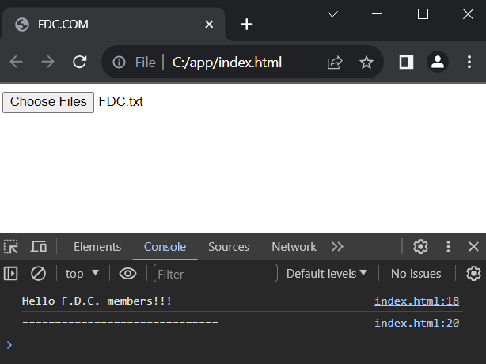
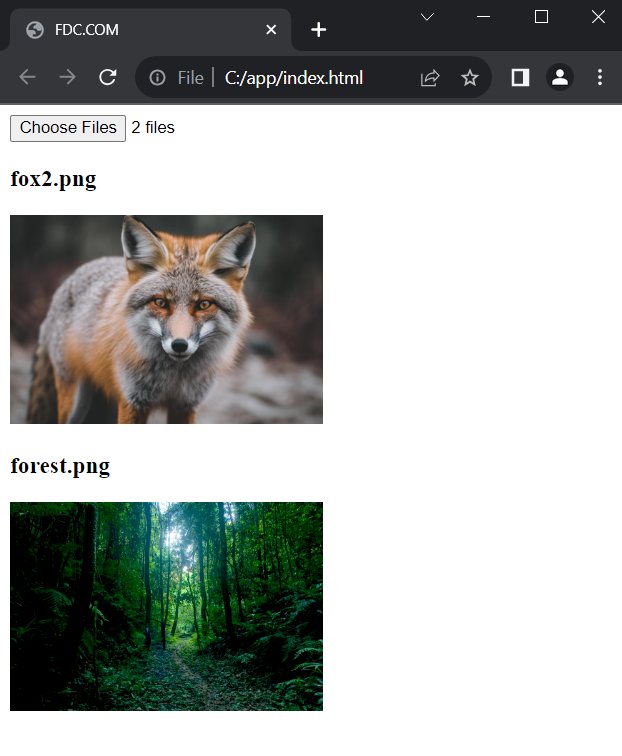
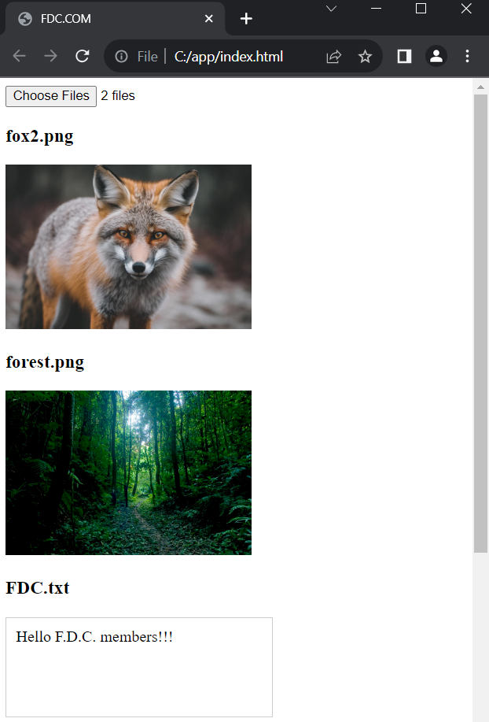

Citirea fișierelor cu FileReader.
Pentru citirea fișierelor selectate în File API se utilizează
obiectul FileReader. Acest tip oferă diferite metode de
citire a fișierelor:
- readAsBinaryString(): citește datele
într-un șir de octeți
- readAsText(): citește datele ca
text
- readAsDataURL(): citește datele ca
adrese URL de date. Adresele URL de date sunt o schemă specială de adrese URL pentru
încorporarea datelor în codul HTML. Adresele URL de date încep cu șirul data:,
urmat de tipul MIME și informația despre codare, precum și datele codificate
corespunzătoare - de exemplu, data:image/png;base64,jfdsfrRdF pentru o imagine PNG cu codare Base64. Astfel, cu ajutorul adreselor URL de date, de
exemplu, datele imaginii sub formă de șir pot fi utilizate direct în codul HTML, ceea
ce, la rândul său, reduce numărul de cereri HTTP la pagina web, deoarece browserului nu
îi trebuie să facă o a doua cerere pentru obținerea imaginii
- readAsArrayBuffer(): citește datele
într-un obiect ArrayBuffer
- abort(): întrerupe procesul de citire
a datelor
De asemenea, în procesul de lucru cu FileReader
pot apărea o serie de evenimente:
- abort: generat la întreruperea citirii
prin metoda abort
- error: generat la apariția unei
erori
- load: generat la finalizarea cu succes a
citirii datelor
- loadstart: generat la începutul
procesului de citire a datelor
- loadend: generat după finalizarea
citirii datelor
- progress: generat în timpul citirii,
notificând despre progresul citirii
Astfel, la finalizarea cu succes a citirii, se declanșează evenimentul
load, în handler-ul căruia se pot obține datele
citite fie prin proprietatea result a obiectului FileReader,
fie prin proprietatea target.result a parametrului
handler-ului evenimentului, anterior fiind definit un handler de evenimente sau înregistrat un
ascultător de evenimente. Dacă evenimentul de încărcare a fost declanșat,
conținutul fișierului este de asemenea disponibil prin proprietatea result.
De exemplu, citim fișierele care sunt selectate prin elementul <input type="file">. Să presupunem că am
următorul fișier "hello.txt":
Pentru citirea acestuia (și pentru citirea oricăror alte fișiere
text) definim următoarea pagină web:
|
<!DOCTYPE html>
<html>
<head>
<meta charset="utf-8" />
<title>FDC.COM</title>
</head>
<body>
<input
type="file" id="files" accept="text/*" multiple
/>
<script>
function printFiles(e) {
const files =
e.target.files; // obținem toate fișierele selectate
for (file
of files) { // Parcurgem toate fișierele selectate
// creăm un obiect FileReader pentru citirea fișierului
const reader = new FileReader();
// la
citirea cu succes a fișierului afișăm conținutul său pe pagina web
reader.onload = () => {
// afișăm conținutul
console.log(reader.result);
// pentru
separare, dacă sunt selectate mai multe fișiere
console.log("==============================");
};
// citim fișierul
reader.readAsText(file);
}
}
document.getElementById("files").addEventListener("change",
printFiles);
</script>
</body>
</html>
|
Aici pe pagină este definit elementul de intrare input, pentru care cu
ajutorul atributului accept="text/*" este
stabilit un filtru pentru acceptarea doar a fișierelor de tip text.
|
<input type="file" id="files" accept="text/*" multiple />
|
În codul JavaScript pentru elementul input, ca handler pentru evenimentul
"change", stabilim funcția printFiles:
|
document.getElementById("files").addEventListener("change", printFiles);
|
În această funcție parcurgem toate fișierele selectate, pe
care le obținem din obiectul evenimentului prin proprietatea e.target.files, și creăm un
obiect FileReader pentru citirea fiecărui fișier
|
function printFiles(e) {
const files = e.target.files;
// obținem toate fișierele selectate
for (file of files) { // Parcurgem
toate fișierele selectate
// creăm un obiect FileReader pentru citirea
fișierului
const reader = new FileReader();
// la citirea cu succes a fișierului
afișăm conținutul său pe pagina web
|
Definim handler-ul pentru evenimentul load:
|
reader.onload = () => {
console.log(reader.result); // afișăm
conținutul
// pentru separare, dacă sunt selectate mai multe
fișiere
console.log("==============================");
};
|
În handler, prin proprietatea reader.result
obținem datele citite și le afișăm în consolă. De
asemenea, dacă sunt selectate mai multe fișiere, afișăm în consolă un
separator condiționat.
La final, citim de fapt fișierul cu ajutorul funcției readAsText()
Rezultatul lucrării:

Afișarea metadatelor fișierului.
Am văzut cum să obținem și să afișăm în
consolă textul unui fișier. În principiu, totul este destul de simplu. Dar când
parcurgem fișierele prin proprietățile obiectului File, ne sunt accesibile diferite metadate ale fișierului - numele, mărimea, tipul, data
modificării. Ce se întâmplă dacă vrem, de exemplu, să afișăm
și numele fișierului când afișăm textul acestuia? Abordarea naivă ar
arăta astfel:
|
for (file of files) {
console.log("Numele
fișierului:", file.name); // afișăm numele fișierului
const reader = new FileReader();
reader.onload
= () => {
console.log("Numele
fișierului:", file.name); // încercăm să afișăm aici
console.log(reader.result);
console.log("==============================");
};
reader.readAsText(file);
}
|
Problema este că handler-ul reader.onload are o natură asincronă - citirea
fișierului anterior poate să se finalizeze când începe (sau chiar s-a finalizat deja)
citirea următorului fișier. În consecință, o astfel de abordare poate duce la
coliziuni. Una dintre soluțiile posibile constă în capturarea datelor necesare din exterior
prin intermediul unui closure:
|
function printFiles(e) {
const files = e.target.files;
for (file of files) {
const reader = new FileReader();
reader.onload = (function(fileData) {
return function(e){
console.log("Numele fișierului:", fileData.name);
console.log(e.target.result);
// același lucru ca și reader.result
console.log("==============================");
};
})(file);
reader.readAsText(file);
}
}
|
În acest caz, handler-ului onload i se atribuie rezultatul unei
funcții auto-executabile, care formează un closure. Prin parametrul său fileData în
funcție este transmis obiectul File curent.
Citirea imaginilor.
Într-un mod similar, putem citi și alte tipuri de fișiere. De
exemplu, să citim și să afișăm pe pagina web imaginile:
|
<!DOCTYPE html>
<html>
<head>
<meta charset="utf-8" />
<title>FDC.COM</title>
<style>
div.item {width: 250px; margin:0 10px;}
.image {width: 250px;}
</style>
</head>
<body>
<input type="file"
id="files" accept="image/*" multiple />
<div
id="fileList"></div>
<script>
function printFiles(e) {
const files = e.target.files;
for (file of files) {
const reader = new FileReader();
reader.onload = (function(fileData) {
return function(){
//
creăm un element div
const
fileItem = document.createElement("div");
fileItem.className = "fileItem";
// creăm un titlu pentru fișierul adăugat
const fileHeader =
document.createElement("h3");
fileHeader.textContent = fileData.name;
fileItem.appendChild(fileHeader);
// creăm un element img pentru afișarea fișierului
const img =
document.createElement("img");
img.src = reader.result;
img.className = "image";
fileItem.appendChild(img);
document.getElementById("fileList").appendChild(fileItem);
};
})(file);
reader.readAsDataURL(file);
}
}
document.getElementById("files").addEventListener("change",
printFiles);
</script>
</body>
</html>
|
Acum, pentru elementul de intrare este setat filtrul accept="image/*", iar toate imaginile încărcate sunt
afișate în elementul <div id="fileList">. Pentru aceasta, în handler-ul onload, creăm un element div, în care
adăugăm un titlu h3 cu numele fișierului și un element img cu conținutul
fișierului. Conținutul fișierului este citit folosind metoda reader.readAsDataURL().
Exemplu de funcționare:

Combinarea diferitelor tipuri de fișiere.
De asemenea, putem combina deschiderea fișierelor de diferite tipuri:
|
<!DOCTYPE html>
<html>
<head>
<meta charset="utf-8" />
<title>FDC.COM</title>
<style>
div.item {width: 250px; margin:0 10px;}
.text{min-height: 80px; width:
250px; border:1px solid #ccc;padding:10px;}
.image {width: 250px;}
</style>
</head>
<body>
<input type="file"
id="files" multiple />
<div
id="fileList"></div>
<script>
const fileList =
document.getElementById("fileList");
// creăm un element care reprezintă
un fișier separat pe pagină
function createFileItem(file){
const
fileItem = document.createElement("div");
fileItem.className =
"fileItem";
// creăm un titlu pentru fișierul
adăugat
const fileHeader = document.createElement("h3");
fileHeader.textContent = file.name;
fileItem.appendChild(fileHeader);
return fileItem;
}
function
readTextFile(file){
return function(e){
const
fileItem = createFileItem(file);
// creăm un element div
pentru afișarea textului fișierului
const div =
document.createElement("div");
//
înlocuim sfârșiturile de linie cu text corespunzător
div.textContent = e.target.result.replace("\n", "\n");
div.className = "text";
fileItem.appendChild(div);
fileList.appendChild(fileItem);
};
}
function
readImageFile(file){
return function(e){
const
fileItem = createFileItem(file);
// creăm un element img
pentru afișarea fișierului
const img =
document.createElement("img");
img.src =
e.target.result;
img.className = "image";
fileItem.appendChild(img);
fileList.appendChild(fileItem);
};
}
function printFiles(e)
{
const files = e.target.files;
for (file of files)
{
// citim fișierul
const
reader = new FileReader();
if(file.type.match("text.*")) {
reader.onload = readTextFile(file);
reader.readAsText(file);
}
else if(file.type.match("image.*")) {
reader.onload = readImageFile(file);
reader.readAsDataURL(file);
}
}
}
document.getElementById("files").addEventListener("change",
printFiles);
</script>
</body>
</html>
|
Aici, în funcție de tipul fișierului, creăm un element
specific (<div> pentru afișarea
fișierelor text și <img> pentru
afișarea imaginilor). De exemplu, să selectăm fișiere de diferite tipuri:
